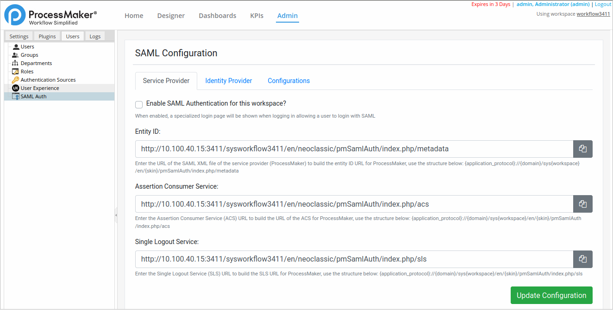
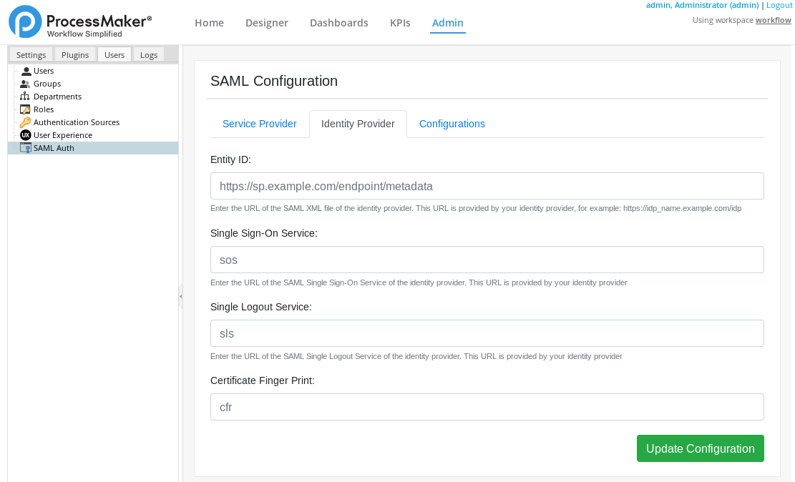
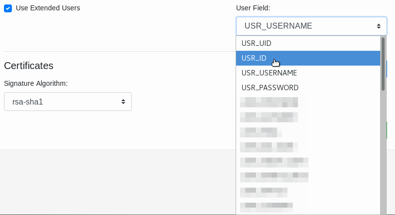
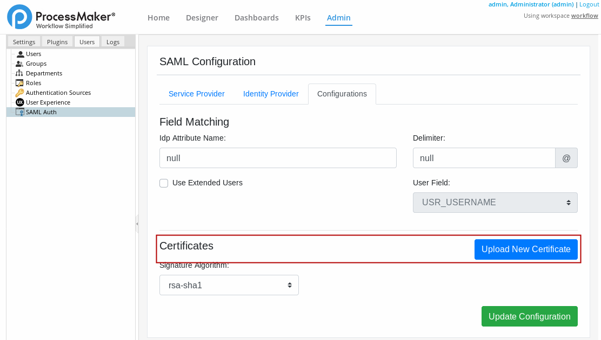
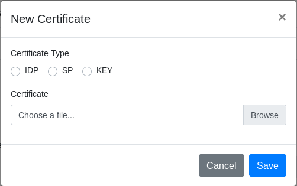
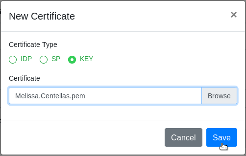
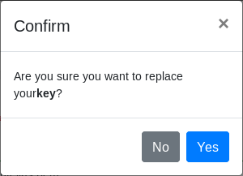
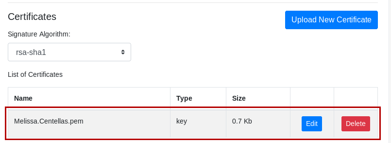
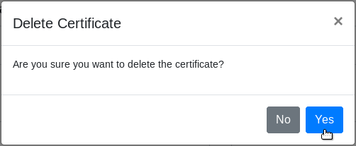

Plugin Version:
1.1.2 |
Release Notes
Plugin Version:
1.1.2 |
Release Notes
Overview
Security Assertion Markup Language (SAML) is an XML-based, open-standard format data for exchanging authentication and authorization data between parties. Particularly, between an identity provider and a service provider. The Single Sign-On (SSO) SAML plugin facilitates the use of the single logon or single logoff feature in ProcessMaker (the service provider) via an external identity provider service that supports the SAML 2.0 standard, such as OneLogin, Shibboleth and openAM.
The SAML plugin uses the SAML 2.0 standard that enables Single Sign-On and Single Logout using an external SAML identity provider. This plugin allows a ProcessMaker user to log on to ProcessMaker using a single logon. When the user clicks the Logout button in the main menu, their session is logged off of both ProcessMaker (the service provider) and the identity provider.
Requirements
The requirements to install the SAML Authentication plugin are the following:
- It works with ProcessMaker Enterprise edition, version 3.4.0 or later.
- It supports the following Identity Providers: Okta, OneLogin, Microsoft Azure, Apps4U, ADFS, openAM, Shibboleth and PING.
- It requires an HTTPS connection to use the SSL protocol.
Install and Enable the SAML Authentication Plugin
Follow these steps to complete the enterprise plugin installation:
Log in with a user, such as "admin", who has the PM_SETUP_ADVANCE permission in their role.
Go to ADMIN > Plugins > Enterprise Manager.
In the Enterprise Plugins tab, install the SAML Authentication plugin doing one of the following:
- Click
 Install from File and upload the plugin file.
Install from File and upload the plugin file. - Click the SAML Authentication plugin's Install now or Upgrade now button in the list of available plugins.

For more information about plugin options, see Enterprise Manager Tool.
- Click
After installing the plugin, make sure that the SAML Authentication plugin is enabled
 . If the plugin is not enabled, click the Enable button, as shown in the graphic below.
. If the plugin is not enabled, click the Enable button, as shown in the graphic below.
After enabling the plugin, it automatically assigns the PM_SAML_ADMIN permission to the PROCESSMAKER_ADMIN role. If you uninstall the plugin, the permission given is NOT deleted.
SAML Configuration
After the SAML Authentication plugin is installed, refer to the following sections regarding configuration:
Service Provider
Follow these steps to integrate ProcessMaker as a service provider:
Log on to ProcessMaker using administrator credentials.
Go to Admin > Users > SAML Auth. The SAML Configuration panel displays and the Service Provider tab displays by default. Click Service Provider to view this tab when it is not currently selected.

Select the Enable SAML Authentication for this workspace? check box. When enabled, a specialized logon page displays when logging on, allowing a user to log on with SAML.
In the Entity ID, enter the URL of the SAML XML file of the service provider (ProcessMaker). To build the entity ID URL for ProcessMaker, use the structure below:
{application_protocol}://{domain}/sys{workspace}/en/{skin}/pmSamlAuth/index.php/metadata Where:
{application_protocol}: Specifies the application layer protocol. For example: http, https, etc.{domain}: Domain or IP address of the ProcessMaker server. Note that in this case the service provider is ProcessMaker.{workspace}: The workspace where the plugin is installed.{skin}: The workspace skin (neoclassic by default).
As of SAML Authentication 1.1.0, this field is editable and the default values are based on the current URL values for language and skin. Environments that already have the plugin installed, the default values are based on the values of the user who upgrades the plugin.
In the Assertion Consumer Service, enter the Assertion Consumer Service (ACS) URL. To build the URL of the ACS for ProcessMaker, use the structure below:
{application_protocol}://{domain}/sys{workspace}/en/{skin}/pmSamlAuth/index.php/acs Where:
{application_protocol}: Specifies the application layer protocol. For example: http, https, etc.{domain}: The domain or IP address of the ProcessMaker server.{workspace}: The workspace where the plugin is installed.{skin}: The workspace skin (neoclassic by default).
As of SAML Authentication 1.1.0, this field is editable and the default values are based on the current URL values for language and skin. Environments that already have the plugin installed, the default values are based on the values of the user who upgrades the plugin.
In the Single Logout Service, Enter the Single Logout Service (SLS) URL. To build the SLS URL for processmaker, use the structure below:
{application_protocol}://{domain}/sys{workspace}/en/{skin}/pmSamlAuth/index.php/sls Where:
{application_protocol}: Specifies the application layer protocol. For example: http, https, etc.{domain}: The domain or IP address of the ProcessMaker server.{workspace}: The workspace where the plugin is installed.{skin}: The workspace skin (neoclassic by default).
As of SAML Authentication 1.1.0, this field is editable and the default values are based on the current URL values for language and skin. Environments that already have the plugin installed, the default values are based on the values of the user who upgrades the plugin.
Click Update Configuration. The message "The configuration has been updated" displays at the top of the screen to confirm the settings are saved.
After clicking Update Configuration, Audit Log stores the configuration as {ID_SAML_SETTINGS} SAML Authentication settings.
Identity Provider
Follow these steps to specify the identity provider:
Log on to ProcessMaker using administrator credentials.
Go to Admin > Users > SAML Auth. The Service Provider tab displays.
Click the Identity Provider tab. The interface to configure the identity provider displays.

In the Entity ID (Required), enter the URL of the SAML XML file of the identity provider. This URL is provided by your identity provider. For example:
https://idp_name.example.com/idp.In the Single Sign-On Service (Required), enter the URL of the SAML Single Sign-on service of the identity provider. This URL is provided by your identity provider.
In the Single Logout Service, enter the URL of the SAML Single Logout service of the identity provider. This URL is provided by your identity provider.
Note: If this parameter is not set, the user will be redirected to the default login Processmaker page. It is recommended to set a URL to avoid issues with current sessions.
In the Certificate Finger Print, enter the SHA1 (Secure Hash Algorithm, cryptographic hash function) string of the SAML certificate fingerprint that the identity provider uses.
Note: The URLs for the identity provider are provided by the external identity provider service with who the company (or end user) works. Contact your identity provider to access this information.
Click Update Configuration. The message "The configuration has been updated" displays at the top of the screen to confirm that the settings are saved.
After clicking Update Configuration, Audit Log stores the configuration as {ID_SAML_SETTINGS} SAML Authentication settings.
Additional Configurations
Additional configurations are:
- Set the user name to be used for the logon
- Upload and remove identity and service certificates
- Select the data encryption type
Field Matching
The Field Matching section displays a form to set the username to be used for the logon.
Log on to ProcessMaker using administrator credentials.
Go to Admin > Users > SAML Auth. The Service Provider tab displays.
Click the Configurations tab.
Go to the Field Matching section.

In the Idp Attribute Name, enter the required attribute name returned by the Identity provider. The value of the attribute name chosen is used to authenticate the user. Every attribute must have its own unique representation in a SAML attribute assertion to ensure that there are no misinterpretations or miscommunication. Thus, SAML exchanges rely on consistent attribute naming to deliver information about users in a way that is mutually understood between the IdP and SP. This attribute name must be expected and handled by relying parties.
As a best practice, users should use their usernames as the primary connection ID to log on via the SAML plugin because it is always a unique value. While users can be configured to use other attributes such as their first name or last name, these may not always be unique values within an organization.
In the Delimiter, enter a separator (
@). When in the attribute name the delimiter symbol is reached, the rest of the string is not used for the username. For example, you setUser.emailin the attribute name option, then you choose the@symbol as delimiter. Then the username should be for example:sampleuser@processmaker.combut since we choose@as our delimiter the username issampleuser.Select the Use Extended Users checkbox to enable or disable the User Field option.
In the User Field, select a user attribute of the service provider (ProcessMaker) database to identify a user.

This option only works if the Use Extended Users checkbox is selected. The Idp Attribute Name and the Delimiter data previously entered also apply when using this option.
Certificates
This section allows the user to upload, edit or remove certificates of both the service provider and the identity provider.
To upload a certificate, follow these steps:
Log on to ProcessMaker using administrator credentials.
Go to Admin > Users > SAML Auth. The Service Provider tab displays.
Click the Configurations tab.
Go to the Certificates section.

Click Upload New Certificate to upload a certificate. The New Certificate window displays.

In the Certificate Type field, select one option among IDP, SP or KEY. A certificate type is allowed by Workspace.
In the Certificate section, click Browse to find a certificate file.
Click Save to upload the certificate.

Note: If there is a previously uploaded certificate into ProcessMaker, a confirmation window displays saying "Are you sure you want to replace your {sp/idp/key}?" with the options Yes/No.

After uploading the certificate, it is listed in the List of Certificates section.

This lists the certificate name, type and size. Additionally the Edit and Delete buttons display.
To edit an existing certificate, follow these steps:
In the certificates list, click Edit on the certificate you want to edit.
The Edit Certificate window displays. Select the certificate type you want to change.

Click Save. The certificate type changes.
To delete a certificate, follow these steps:
In the certificates list, click Delete on the certificate you want to delete.
The Delete Certificate window displays. Click Yes to confirm. Otherwise, click No.

The certificate no longer displays in the List of Certificates section.
Signature Algorithm
Select the data encryption type provided by the identity provider.
Log on to ProcessMaker using administrator credentials.
Go to Admin > Users > SAML Auth. The Service Provider tab displays.
Click the Configurations tab.
In the Signature Algorithm dropdown, select an algorithm.

The following algorithms are supported:
- rsa-sha1
- dsa-sha1
- rsa-sha256
- rsa-sha384
- rsa-sha512
The encrypt algorithm rsa-sha1 is used as default.
After configuring the Field Matching, Certificates and the Signature Algorithm, save the changes by clicking Update Configuration. The settings are saved and the "The configuration has been updated" message displays at the top of the screen.

After clicking Update Configuration, Audit Log stores the configuration as
{ID_SAML_SETTINGS} SAML Authentication settings.
Log On Using SAML Authentication Plugin
After the SAML Authentication plugin is configured, refer to Log On Via SAML Authentication for information how to log on using this plugin.